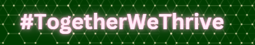
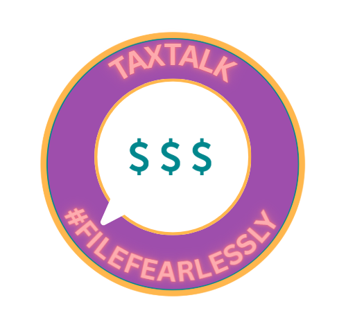

FBLA · SOCIAL MEDIA STRATEGY
#TogetherWeThrive
Developed a social media strategy to strengthen Thriving Elements' digital presence and help its mission reach more potential supporters and donors.
2nd place nationally · 130+ teams// hello, world! _
Student. Developer. Builder. Creative thinker.
I turn ideas into technology, business solutions, and projects that make a difference.
$ whoami
Geethika Chandolu
$ ls passions/
technology/ business/
design/ community/
data/ creativity/
$ cat current_focus.txt
building things that matter▋
const curiosity = (ideas) => ideas.map(build).filter(makeImpact);somewhere between an idea and a working prototype is my favorite place to be↝00 / THE DIRECTORY
Pick a file, follow a rabbit hole, or scroll wherever curiosity takes you.
01 / THE PERSON BEHIND THE PROJECTS
I'm a high school senior at North Creek High School, class of 2027, interested in where technology, data, design, and business meet. I love taking an idea from a messy first sketch to something people can actually use.
From building health-tech tools to developing AI-powered experiences and pitching startup solutions, I'm most excited by work that combines problem-solving with a real human purpose.
More about my journey ↗A FEW ROWS ABOUT ME
Not everything meaningful comes with a GitHub repository.
current_chapterhigh school senior · class of 2027favorite_intersectiontechnology × business × peoplealso_lovedesign, creative campaigns & mentoringlanguagesEnglish · Telugu · Spanishstatusalways learning ✳02 / THINGS I'VE BUILT
Tech, data, product design, and a little bit of everything in between.
03 / BEYOND THE CODE

FBLA · SOCIAL MEDIA STRATEGY
Developed a social media strategy to strengthen Thriving Elements' digital presence and help its mission reach more potential supporters and donors.
2nd place nationally · 130+ teams
FBLA · FINANCIAL LITERACY
A Gen Z-focused campaign designed to make taxes easier to understand through approachable messaging and educational outreach.
4th at state · National qualifierCO-FOUNDER · COMMUNITY
Co-founded a student organization promoting mental health awareness through educational resources, school workshops, and outreach.
Leadership + community buildingTHE COMMON THREAD / 03.5
Something people need, something that could work better.
Code, design, test, pitch, and keep iterating.
Turn the work into something useful for real people.
// from healthcare to agriculture to student life — it all connects ✦
04 / THE JOURNEY
Technology Lead & Marketing Intern
Built and presented AgriGuard and HeartLens; worked across frontend engineering, product design, business strategy, and pitching to industry professionals.
AI/ML & App Development Scholar
Created MoodMuse with HTML, CSS, and JavaScript, and developed the Swift-based student productivity app All Set with a team.
Medlytics Programmer
Worked with clinical datasets and built predictive models using Python, logistic regression, random forests, and neural networks.
Co-Founder & Vice President
Helped build a student-led mental health awareness organization, develop its website, and coordinate educational workshops and resources.
Leadership Officer · Youth Leadership Board Member
Developed business campaigns, organized outreach and social media initiatives, and contributed to community programming through Vasavi Seattle.
05 / LITTLE WINS, BIG MEMORIES
FBLA · Introduction to Social Media Strategy
130+ teams across the U.S.AgriGuard · C2S Technologies
Also Best Marketing & Best PresentationHeartLens · C2S Technologies
2025 cohortFBLA · Business Presentation
7th place, Washington state06 / MY TOOLBOX
07 / A LITTLE EASTER EGG
A tiny interactive corner of my portfolio. Try help, about, projects, skills, surprise, or clear.
08 / SAY HELLO
Have an idea, opportunity, or just want to connect?
✳